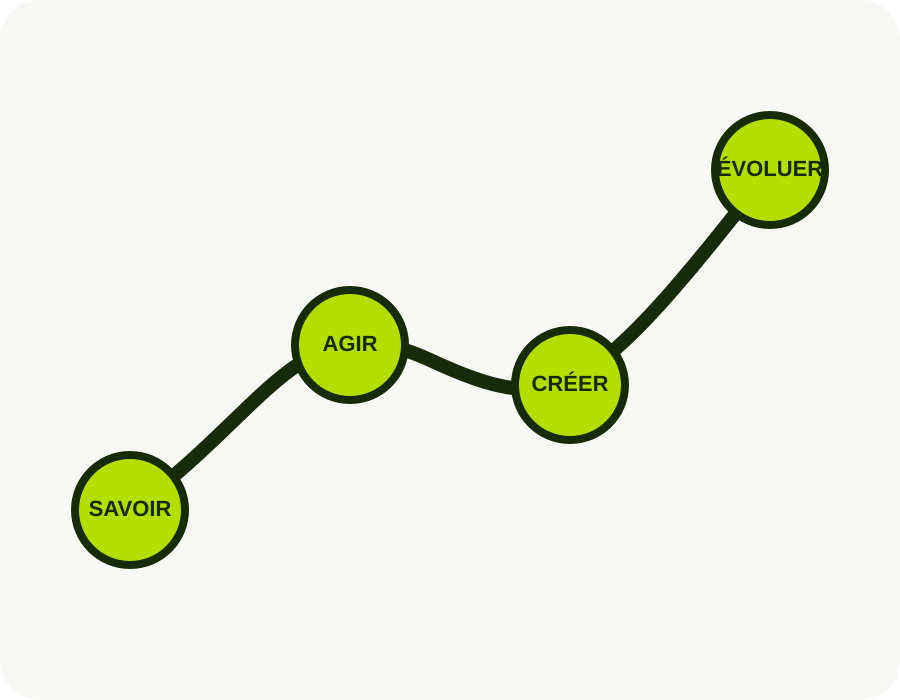

Digital Marketing
Construire une présence et des actions digitales cohérentes.
Elevatorium aide les jeunes et les professionnels à développer des compétences concrètes pour leur parcours professionnel et entrepreneurial.
Apprendre. Pratiquer. Créer. Évoluer.
Elevatorium est une organisation de formation et de développement professionnel basée à Kinshasa. Elle accompagne les jeunes et les professionnels dans l’acquisition de compétences numériques, professionnelles et entrepreneuriales.
Construire une génération capable de transformer ses connaissances, ses compétences et ses idées en opportunités professionnelles, entrepreneuriales et sociales.

Chaque parcours relie les notions essentielles à la pratique et à la réalisation de projets.
Construire une présence et des actions digitales cohérentes.
Utiliser les réseaux sociaux avec intention et méthode.
Passer d’une idée à un contenu qui transmet vraiment.
Créer du lien, écouter et faire vivre une communauté.
Comprendre les outils et les intégrer avec discernement.
Donner une forme claire et cohérente à ses idées.
Passer de l’intuition à un projet mieux construit.
Développer les bases utiles pour les études et le travail.
Acquérir les repères et les connaissances fondamentales.
Tester, s’exercer et recevoir des retours utiles.
Réaliser des projets qui donnent du sens aux acquis.
Évaluer son parcours et identifier la prochaine étape.
Les certificats Elevatorium accompagnent un parcours structuré comprenant apprentissage, pratique, projets, évaluation et examen final.
Échangez directement avec Elevatorium au sujet de votre projet de formation.
Nous contacter sur WhatsAppGuides, articles, tutoriels, modèles, checklists et ressources professionnelles pourront progressivement rejoindre cet espace.
Nos ressources arrivent bientôt.
Découvrez les formations et inscrivez-vous via le formulaire officiel Elevatorium.
Kinshasa, Ngaliema, Avenue Bumba N°1, République démocratique du Congo